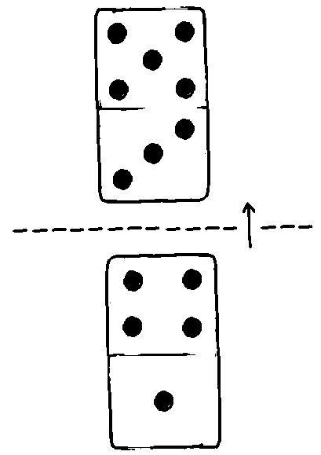

Domine is a 2-players domino game.
Each player draws a hand of seven dominoes and keeps them hidden from their opponent. The two numbers on either side of a domino are the Attack and Defense points, facing the opponent and the player respectively.
Each turn consists choosing which is the attack side and which is the defense side. Players alternate turns until all dominoes have been played. The player with the most living dominoes wins.
When a player attacks with a domino, the opponent must defend with a value equal to or higher than the attack. If the opponent's domino defense value is lower than the attack, the domino is killed. If the opponent's domino defense value is equal to or higher, then the domino survives.
Riposte and First-Strike
If the opponent survives and has an attack number higher than the player's domino defense value, the opponent wins over the player's domino in a riposte. Dominoes with equal sides have first-strike, meaning that they are played as attacking dominoes.
The player plays 4a1d, attacking by 4d. The opponent defends with 3a5d. The attack of 4d is blocked by 5d, and counters with a riposte of 3a, winning over 4a1d. The opponent wins this round, the player's domino is flipped.